Reliable Spare Parts for PET Blow Molding & Filling Lines
Factory-direct replacement parts for KRONES, SIDEL and related beverage production equipment. Send your part code, drawing or sample and receive a fast quotation.
Why Buyers Choose SI YUN DI
Established in 2016, we focus on R&D and manufacturing of high-performance precision parts for PET blow molding, filling equipment and intelligent machinery.
Precision Manufacturing
Support custom parts according to sample, drawing, code or machine model.
Strict QC
Inspection during production and before shipment helps reduce downtime risk.
Safe Packaging
Parts are packed according to product type, weight and transport method.
Fast Communication
Direct WhatsApp/WeChat contact for quick confirmation and after-sales support.
Product Range
Selected product categories and parts enriched from the SI YUN DI spare parts catalog. For exact fitment, send equipment brand, machine model, OEM code or photos.
Visual Catalog
Original catalog pages are included as visual product references, so customers can identify parts quickly and send screenshots for quotation.
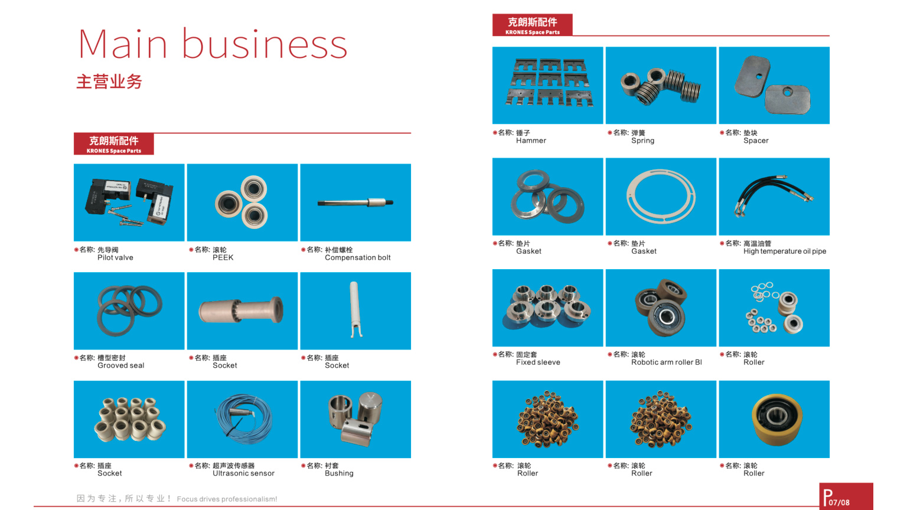
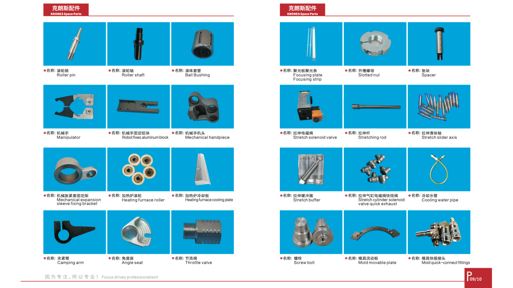
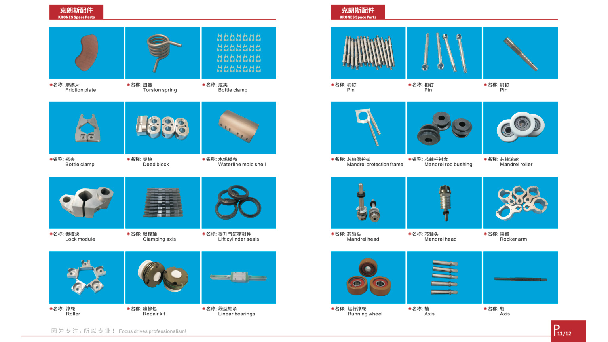
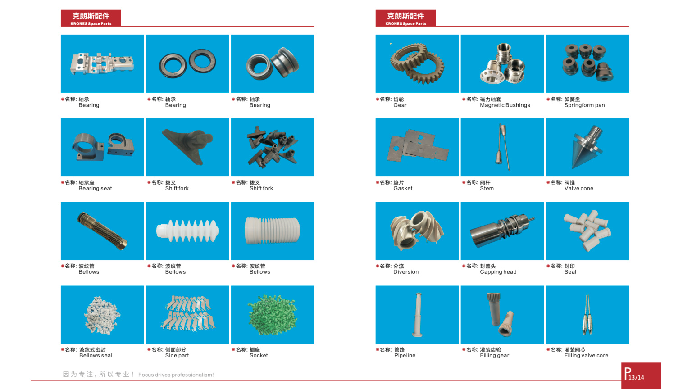
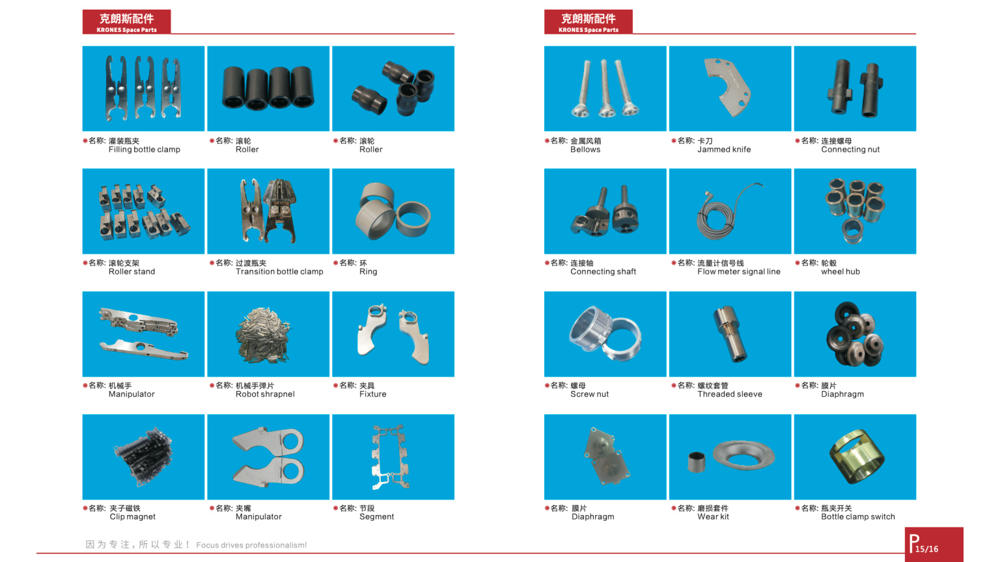
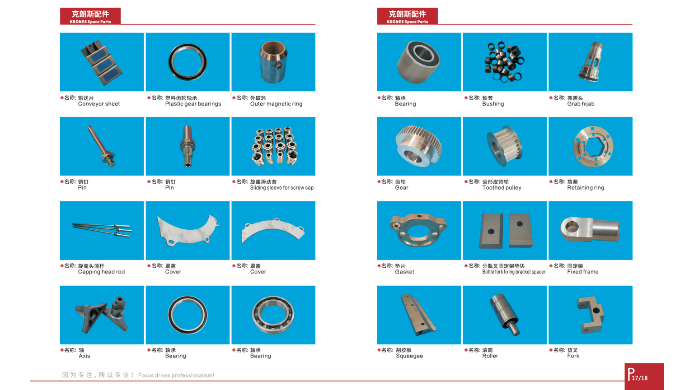
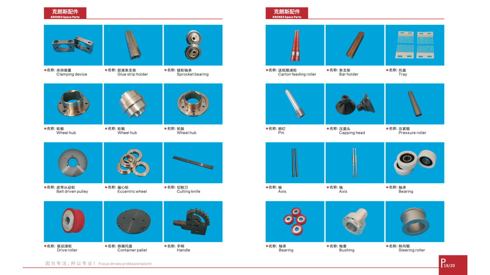
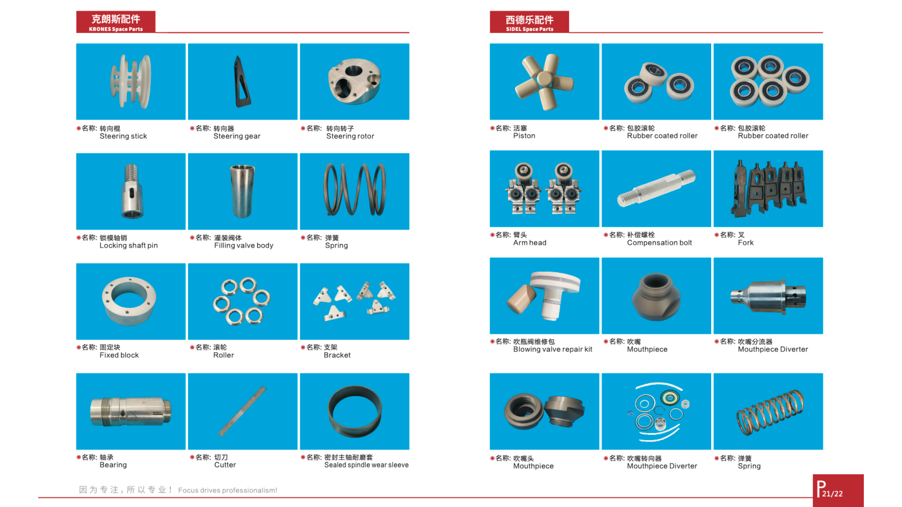
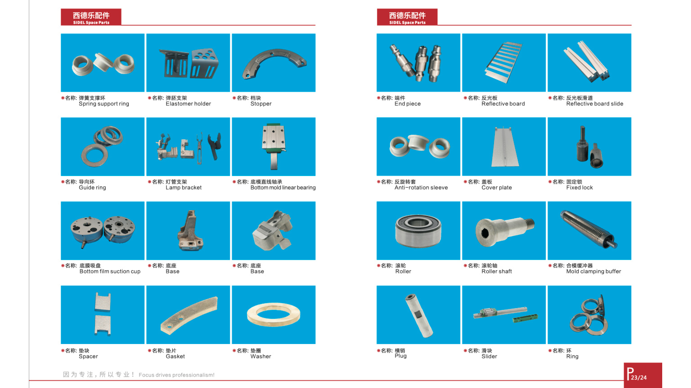
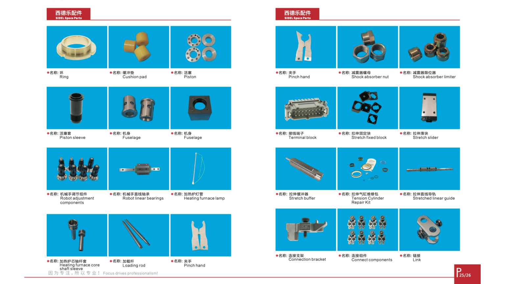
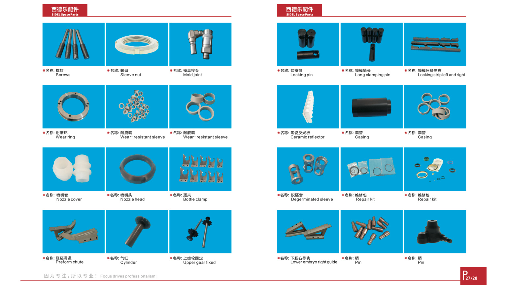
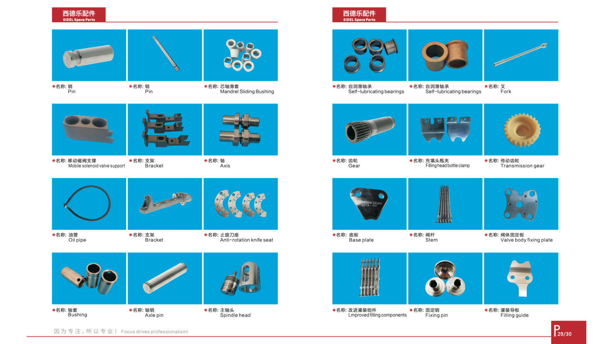
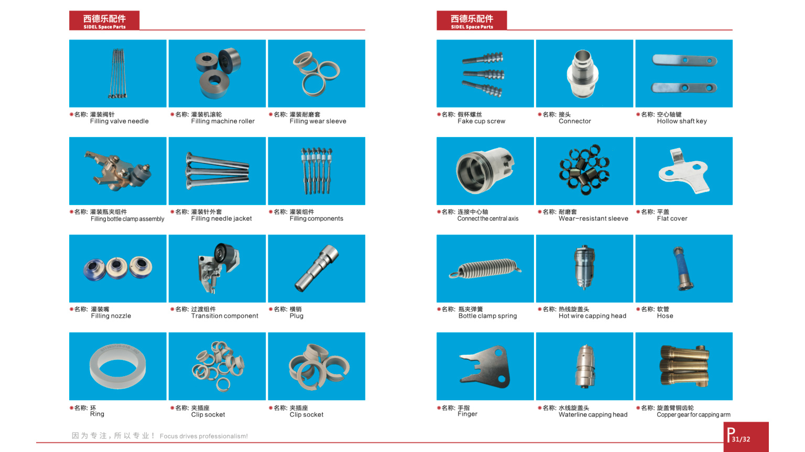
Order Process
Clear workflow from inquiry to delivery, adapted from SI YUN DI's catalog process.
Send Requirements
Provide drawing, sample photo, product code or expected result.
Engineering Review
We confirm design, material, package specification and quotation.
Production + QC
Sample approval, production inspection and final QC before shipment.
Packing + Support
Safe packaging, logistics support and after-sales information feedback.
Need a Spare Part Quote?
Send photos, drawings or part numbers via WhatsApp. We will help confirm the right item and quote quickly.
Contact: Yuki Luo
Mobile/WhatsApp/WeChat: +86 13825017925
Email: gzserendipity@aliyun.com